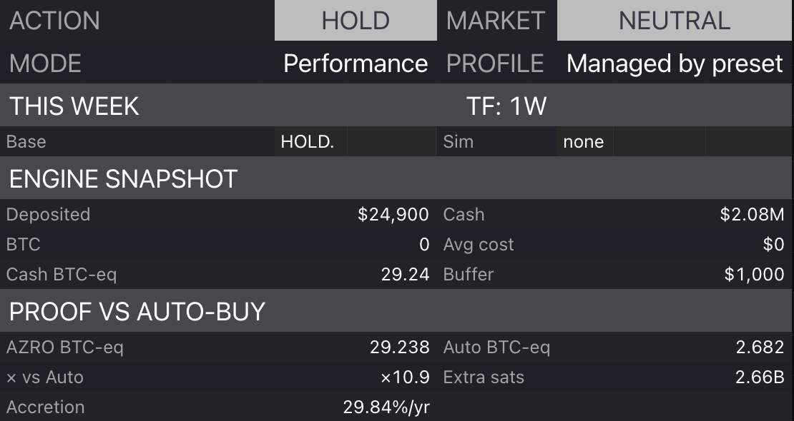

AZRO BTC-eq
The BTC-equivalent result of the engine workflow under the selected settings.
BTC Engine is built to keep the weekly process honest. The proof layer shows whether the workflow is actually adding BTC-equivalent versus a simpler baseline.

The BTC-equivalent result of the engine workflow under the selected settings.
The BTC-equivalent result of a simple auto-buy baseline over the same period.
A direct multiplier that shows how the engine performed relative to the auto-buy baseline.
The additional satoshis accumulated relative to the baseline, expressed as a proof-oriented delta.
Proof keeps the routine grounded. Instead of relying on a feeling, the engine gives you an auditable result on chart.
The proof layer is a measurement system. It does not guarantee future results.
Every preset can be compared against the same simple default without leaving TradingView.
The proof readout is designed for a calmer weekly process, not intraday overfitting.